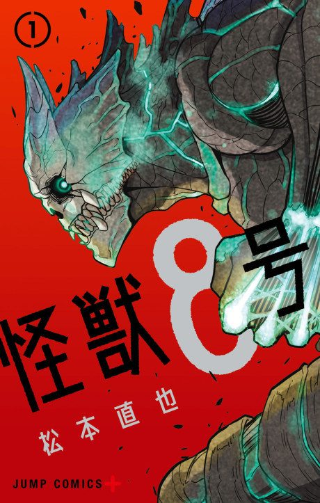

Kaiju No. 8
怪獣8号
Kafka, a 32-year-old who cleans up dead kaiju, always wanted to join the Defense Force. Then he is turned into a kaiju himself.
After the anime, read the manga from Chapter 84.
8.1AniList score
—Animeter, no votes yet
23episodes, 2 seasons
Rate it or report where you stopped
Is it worth pushing through?
Built from what visitors report across all 2 seasons (23 episodes).
Loading reports…Checking what other people said about this one.
Sign in above with your email to add your report.
More like Kaiju No. 8
 Manga Ch. 3408.9
Manga Ch. 3408.9
 Done8.5
Done8.5
 Manga Ch. 1818.4
Manga Ch. 1818.4
 Manga Ch. 2837.7
Manga Ch. 2837.7
 Manga Ch. 577.6
Manga Ch. 577.6
 Manga Ch. 538.3
Manga Ch. 538.3
 Done8.0
Done8.0
 Unclear7.6
Unclear7.6
 Manga Vol. 128.0
Manga Vol. 128.0
 Manga Ch. 1118.0
Manga Ch. 1118.0
 Manga Ch. 2707.9
Manga Ch. 2707.9
 Done8.1
Done8.1